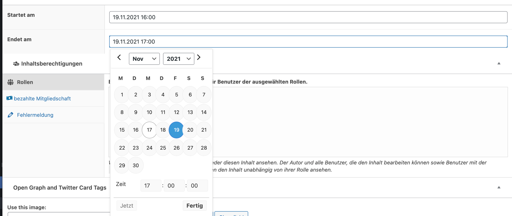
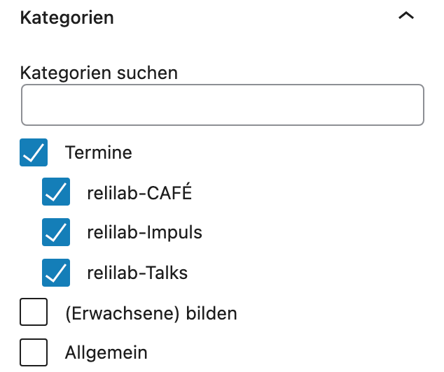
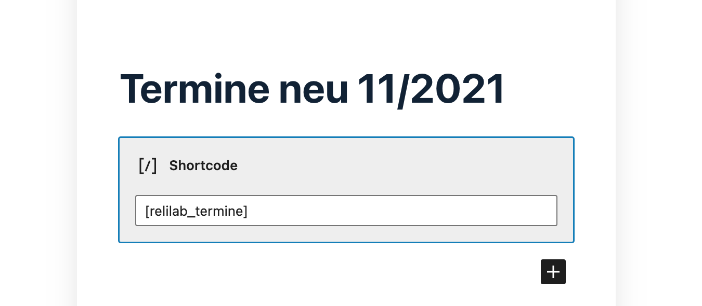
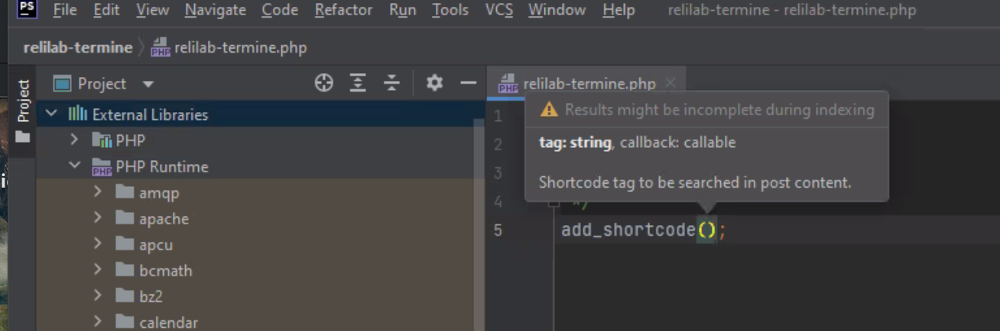
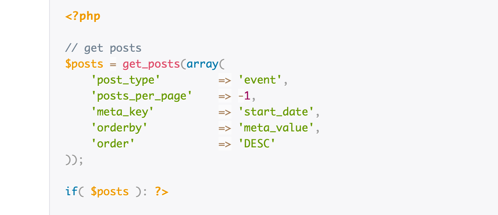
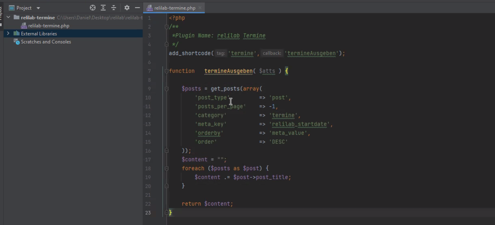

WordPress Werkstatt PHP
Zunächst wird auf relilab.org das kostenfreie Plugin ACF - Advanced Custom Fields installiert und aktiviert.
Dies ermöglicht weitere individuelle Beitragsfelder für die Beiträge.
Nun kann manuell aktiviert oder eine Feldgruppe importiert werden - hier mittels dieser JSON-Datei, die das abkürzt:
 mit dem Ergebnis, dass unter allen WordPress-Beiträgen jetzt zwei Terminfelder erscheinen, die ausgefüllt werden können:
mit dem Ergebnis, dass unter allen WordPress-Beiträgen jetzt zwei Terminfelder erscheinen, die ausgefüllt werden können:

Zudem gibt es neu eine Kategorie “Termine”, die aktiviert werden kann mit Unterkategorien, die später Übersichtsseiten ermöglichen:
Jetzt wird das Plugin relilab-termine installiert und aktiviert Nun kann mittels Shortcode[relilab_termine] eine Terminübersicht als WordPress-Block erzeugt werden:

JSON
ACF-JSON-Export:
[
{
"key": "group_6193936e4f12c",
"title": "Termin",
"fields": [
{
"key": "field_619393f8e62e0",
"label": "Startet am",
"name": "relilab_startdate",
"type": "date_time_picker",
"instructions": "",
"required": 0,
"conditional_logic": 0,
"wrapper": {
"width": "",
"class": "",
"id": ""
},
"display_format": "d.m.Y H:i",
"return_format": "Y-m-d H:i",
"first_day": 1
},
{
"key": "field_619394a3e62e1",
"label": "Endet am",
"name": "relilab_enddate",
"type": "date_time_picker",
"instructions": "",
"required": 0,
"conditional_logic": 0,
"wrapper": {
"width": "",
"class": "",
"id": ""
},
"display_format": "d.m.Y H:i",
"return_format": "Y-m-d H:i",
"first_day": 1
}
],
"location": [
[
{
"param": "post_type",
"operator": "==",
"value": "post"
}
]
],
"menu_order": 0,
"position": "normal",
"style": "default",
"label_placement": "left",
"instruction_placement": "label",
"hide_on_screen": "",
"active": true,
"description": "",
"show_in_rest": 0,
"acfe_display_title": "",
"acfe_autosync": "",
"acfe_form": 0,
"acfe_meta": "",
"acfe_note": ""
}
]
PHP
Software
PHP-Storm
https://www.jetbrains.com/de-de/phpstorm/
Shortcode zum Sprechen bringen
https://developer.wordpress.org/reference/functions/add_shortcode/ In PhpStorm

add_shortcode( string $tag, callable $callback )
alle Termine listen, die https://www.advancedcustomfields.com/resources/orde-posts-by-custom-fields/

PHP-Storm nutzt als External Library dann WordPress

Plugin
Unsere Funktion:
/**
*Plugin Name: relilab Termine
*/
add_shortcode('termine','termineAusgeben');
function termineAusgeben( $atts ) {
$posts = get_posts(array(
'post_type' => 'post',
'posts_per_page' => -1,
'category' => 'termine',
'meta_key' => 'relilab_startdate',
'orderby' => 'meta_value',
'order' => 'DESC'
));
// ob_start();
global $post;
?>
<ul>
<?php
foreach ($posts as $post) {
setup_postdata( $post )
?>
<li>
<a href="<?php the_permalink(); ?>"><?php the_title(); ?> (date: <?php the_field('relilab_startdate'); ?>)</a>
</li>
<?php
}
?>
</ul>
<?php
wp_reset_postdata();
// return ob_get_clean();
}